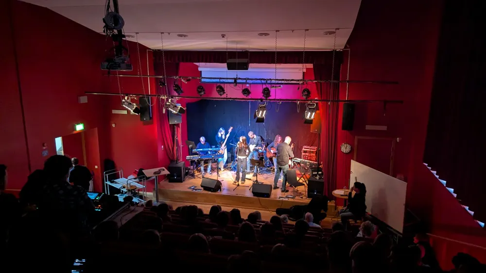

Östra gymnasiet

Stortorps ålderdomshem njuter av dånande estetkonsert
Förra veckans estetkonsert hördes av många från både Östra och från resten av Skogås. Musiken dånade med sådan volym att konserten kunde höras så långt som tio kilometer bort enligt några källor. Det är ett nytt rekord för skolan, som både visar esteternas dedikation och el:arnas kunnighet. På Stortorps ålderdomshem ekade musiken till stor glädje hos de boende på hemmet. "Jag var på väg att dö, men sen hörde jag ‘Never gonna give you up' och jag bestämde mig att leva lite till", säger Annika Malmström medan hon gungar i sin gungstol. "När de började spela ‘Wannabe’ så tror jag inte en enda person kunde motstå att dansa", fortsätter Malmström.
Men några menar att volymen är för hög. Man försökte mäta ljudet under spelningen men mätarna läste bara "NaN". Östras elever verkar inte ha märkt någonting konstigt. "Nä, jag tyckte det var en ok volym", säger Karl Spets som är natur-trea på skolan med hög röst, han fortsätter; "Liksom mina öron ringer fortfarande lite, men alla mina kompisar säger samma sak så det är nog lugnt". Malmström påstår dock att volymen var "helt rimlig". Hon påstår att även om volymen kanske var lite hög och hennes öron inte är vad de brukade vara så anser hon att de borde höja volymen nästa år". Det håller Spets med om, han menar att om nu alla elevers hörsel är för evigt sämre så måste skolan höja volymen till nästa år så att alla hör. "Jag tyckte konserten var underbar, hoppas de har nästa innan jag dör", avslutar Malmström.